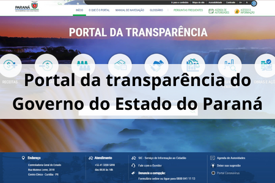

-
INÍCIO
-
TEMÁTICA 1
-
TEMÁTICA 2
-
TEMÁTICA 3
-
TEMÁTICA 4
-
TEMÁTICA 5
Apresentação da disciplina
Disciplina: Dados Públicos: Estruturação, Análise e Aplicação
Curso: Residência em Inovação, Transformação Digital e E-gov
Carga Horária: 45 horas
Professor: Alexandre de Cassio Rodrigues
Contato: alexandrerodrigues.engprod@gmail.com
Acesse aqui o Currículo Lattes do professor

Ementa da disciplina:
Dados públicos: o que são, como devem ser estruturados?
Casos de predição e análise de dados no poder público
Atributos protegidos para decisão pública Ex: gênero, idade, raça, CEP, origem social, etc.
Cases de discriminação e erros em análise de dados. Ex: sistemas discriminam negros em fianças no EUA;
ZIP Code determina quem vai entrar em Ivy League; etc
Fontes de dados: portais de transparência, dados protegidos, dados de entidades externas
A Lei Geral de Proteção de Dados (LGPD) do Brasil.
Apresentação:
Olá, Residentes!
Sou Alexandre de Cássio Rodrigues, professor da disciplina "Dados Públicos: Estruturação, Análise e Aplicação" e também mentor de dez estudantes do Integre. Trabalho na Agência Nacional de Mineração (ANM), uma autarquia federal vinculada ao Ministério de Minas e Energia, onde coordeno a distribuição de royalties da mineração no Brasil (cerca de R$ 7 bilhões por ano), bem como desenvolvo soluções baseadas em dados que possam auxiliar a tomada de decisões.
Relembro que a transformação digital na esfera pública trouxe a necessidade de uma abordagem orientada por dados para a tomada de decisões. Este paradigma, denominado de Data-Driven, tem sido crucial para otimizar operações, melhorar serviços e aumentar a eficiência governamental. Neste contexto, os dados são considerados ativos estratégicos, fundamentais para a promoção de governos mais transparentes, responsivos e eficazes. Portanto, ao dominar a análise de dados, você terá uma oportunidade incrível de alavancar a sua carreira.
Nossa disciplina será do tipo “mão na massa”. Você desenvolverá um projeto que te possibilitará colocar em prática as habilidades necessárias para estruturar e analisar dados públicos. Isso poderá ser o ponto de partida para o seu Trabalho de Conclusão de Curso. Estou muito animado. E você?
Forte abraço,
Alexandre.
Teremos ao todo 5 semanas de estudo desde 12/02/24 até 15/03/24, sendo que nossos encontros síncronos nas LIVES ocorrerão nos dias 15/02/24, 20/02/24, 27/02/24, 05/03/24 e 12/03/24. A 5ª semana.
Conte histórias com dados públicos!
Nesta live vamos discutir sobre a arte de contar histórias com dados públicos, uma abordagem que transforma informações complexas em narrativas acessíveis, destacando padrões e insights significativos. Essa prática vai além da apresentação tradicional de estatísticas, buscando criar uma conexão emocional entre os dados e o público, estimulando a compreensão e ação. Ao capacitar as pessoas com informações baseadas em dados, promove-se uma sociedade mais informada, crítica e engajada.
Aguardo vocês!
Data da Live: 15/02/2024 (Quinta-Feira)
Horário de início: 19:30
Links - Aula síncrona de conteúdo:

Oi, Residente!
Contar histórias com dados é uma forma fascinante de comunicar informações complexas de maneira acessível. À medida que a quantidade de dados disponíveis publicamente continua a crescer exponencialmente, surge a oportunidade de explorar narrativas significativas que destaquem padrões, revelem insights e provoquem reflexões.
Essa prática vai além da simples apresentação de gráficos e estatísticas, buscando criar uma conexão emocional entre os dados e o público. Ao transformar conjuntos de dados aparentemente áridos em relatos cativantes, a narrativa com dados públicos torna-se uma ferramenta poderosa para educar, persuadir e inspirar ação.
Ao contar histórias com dados públicos é possível abordar uma variedade de tópicos, desde questões sociais e econômicas até desafios ambientais e políticos. A escolha e a interpretação dos dados desempenham um papel crucial, permitindo que o contador de histórias destaque nuances, contradições e implicações subjacentes, enriquecendo, assim, a compreensão do público.
Essa abordagem não apenas esclarece fenômenos complexos, mas também estimula a participação social, fornecendo às pessoas as ferramentas necessárias para entender e influenciar questões que impactam suas vidas. Ao capacitar indivíduos com informações baseadas em dados, promove-se uma sociedade mais informada, crítica e engajada.
Aprenda a contar histórias com dados públicos.
Aprenda a analisar dados criticamente.
Clique abaixo para acessar:

Nesta disciplina, seu time (de até de cinco estudantes de um(a) mesmo(a) mentor(a)) deverá criar uma solução que conte uma história com dados públicos. A solução deverá ser desenvolvida em Power BI, com aplicações de técnicas de storytelling. Recomendo que sejam seguidos os seguintes passos:
- Escolha um tema: selecione um tema de interesse público para análise, como saúde, educação, meio ambiente, economia, entre outros;
- Colete os dados: utilize fontes de dados públicos disponíveis para extrair informações relevantes ao tema escolhido;
- Prepare os dados: limpe, transforme e organize;
- Desenvolva o dashboard: utilizando o Power BI, crie um dashboard interativo que apresente a história relacionada ao tema escolhido;
- Produção do pitch: elabore um vídeo de até 03 minutos para apresentar a motivação do solução, descrição do problema a que se destina a resolver, as tecnologias envolvidas, a descrição das funcionalidades além da demonstração do uso da solução.
Serão adotados os seguintes critérios de avaliação da solução:
- Originalidade e Criatividade – a solução permite entender com clareza a importância do tema no cotidiano do cidadão, por meio de uma abordagem direta e simples – até 02 pontos;
- Usabilidade e Funcionalidade – a solução é de uso fácil, bem como possui um visual amigável e intuitivo para o usuário? – até 02 pontos;
- Impacto Social – a solução tem potencial para gerar mudanças na sociedade? até 02 pontos;
- Clareza na apresentação do pitch – o pitch permite o entendimento do desenvolvimento da solução e as funcionalidades existentes – até 04 pontos.
Deverá ser postado apenas o link pitch (um para cada time), o qual deverá identificar todos os integrantes.
Clique no botão abaixo para acessar a atividade
Atividade

Estruture, trate e modele dados públicos!
Nesta live você aprenderá a usar o Power BI para extrair e modelar dados públicos. Com isso, você poderá desenvolver soluções que promovam a transparência ao tornar os dados acessíveis e compreensíveis para o público, incentivando, assim, o controle social das questões governamentais.
Aguardo vocês!
Data da Live: 20/02/2024 (Terça-Feira)
Horário de início: 19:30
Links - Aula síncrona de conteúdo:
A estruturação, extração e modelagem de dados públicos desempenham papéis fundamentais na efetiva utilização das informações disponíveis nos portais de dados públicos. A estruturação envolve a organização e padronização dos conjuntos de dados para facilitar a compreensão e o acesso, enquanto a extração refere-se à obtenção desses dados de fontes diversas. A modelagem, por sua vez, visa criar representações eficientes e interpretáveis dos dados para análise.
Os portais de dados públicos são plataformas essenciais que concentram informações provenientes de diversas entidades governamentais, facilitando o acesso e a utilização desses dados pela sociedade. A estruturação adequada dessas informações nos portais é vital para garantir que sejam compreensíveis e utilizáveis, promovendo a transparência e a participação social.
A extração de dados públicos desses portais permite que pesquisadores, desenvolvedores e profissionais analisem e apliquem essas informações em uma variedade de contextos, desde análises estatísticas até o desenvolvimento de soluções inovadoras. A extração eficaz de dados é crucial para garantir a integridade das informações e evitar distorções que possam comprometer a validade das análises.
Quanto à modelagem de dados, ela envolve a criação de estruturas compreensíveis e úteis, como bancos de dados, para armazenar e organizar os dados extraídos. Modelos bem desenvolvidos facilitam a análise e a interpretação dos dados, contribuindo para a geração de insights valiosos.
Aprenda mais sobre estruturação, extração e modelagem de dados públicos.
Autoavaliação de competências de inovação.
Atividade 1: Pesquisa
Clique no botão abaixo para acessar a Atividade
Aplique técnicas de Storytelling para contar histórias com dados públicos!
A aplicação do storytelling para contar histórias com dados públicos acrescenta uma dimensão envolvente, transformando estatísticas em narrativas significativas e acessíveis. Ao incorporar elementos narrativos, como personagens e desafios, as informações estatísticas ganham vida, proporcionando uma compreensão mais profunda e memorável para o público. Essa abordagem não apenas informa, mas também inspira ação, tornando-se uma ferramenta eficaz para promover conscientização e mobilização em torno de questões sociais relevantes.
Aguardo vocês!
Data da Live: 27/02/2024 (Terça-Feira)
Horário de início: 19:30
Links - Aula síncrona de conteúdo:
A aplicação do storytelling para contar histórias com dados públicos é uma abordagem que vai além da mera apresentação de estatísticas, adicionando contexto e significado aos números. Ao incorporar elementos narrativos, como personagens, desafios e soluções, as informações estatísticas ganham vida, tornando-se mais acessíveis e envolventes para o público. Essa técnica não apenas informa, mas também emociona, conectando as pessoas às implicações práticas dos dados e incentivando uma compreensão mais profunda.
Ao utilizar o storytelling, é possível criar uma estrutura narrativa que conduz o público através dos dados, destacando tendências, desafios e impactos sociais. Isso não só facilita a compreensão, mas também ajuda a reter a atenção do público, tornando a informação mais memorável e influente. A inclusão de casos reais e exemplos concretos enriquece a narrativa, proporcionando aos ouvintes uma conexão mais pessoal e incentivando a reflexão sobre questões relevantes.
Além disso, o storytelling com dados públicos pode ser uma ferramenta eficaz para promover a conscientização e a mudança. Ao apresentar os dados de uma maneira envolvente e persuasiva, é possível inspirar ações, influenciar decisões políticas e mobilizar a sociedade em torno de questões críticas.
Aprenda mais sobre storytelling com dados públicos.
Guia Brasileiro de Análise de Dados.
Clique abaixo para acessar:

Análise do Material
Comente o quadro 2 disponível na página 91 do documento abaixo. O quadro aborda as alterações que a Lei da Transparência trouxe para a lei de responsabilidade fiscal. Analise quais foram as mudanças e a relevância dessas alterações
Acesse o quadro aqui


Atividade
Publique e compartilhe informações com dados públicos!
Nesta live você aprenderá a utilizar o Power BI para publicar e compartilhar dados públicos, possibilitando a criação de dashboards interativos na nuvem, o que amplia o acesso e a compreensão das informações. Além disso, a integração com diversas plataformas e os recursos de segurança contribuem para promover a transparência e o engajamento cívico ao disponibilizar dados relevantes para a tomada de decisões informadas.
Aguardo vocês!
Data da Live: 05/03/2024 (Terça-Feira)
Horário de início: 19:30
Links - Aula síncrona de conteúdo:
A utilização do Power BI para a publicação e compartilhamento de dados públicos representa uma estratégia eficiente para tornar informações complexas mais acessíveis e compreensíveis.
Ao criar dashboards e relatórios interativos, a ferramenta permite a análise intuitiva e interpretação dos dados, com a vantagem de publicá-los na nuvem para acesso remoto, independentemente do local do usuário. Essa abordagem interativa também pode ser integrada a diversas plataformas, como websites e redes sociais, facilitando a divulgação e ampliando a visibilidade dos dados.
Além disso, a segurança e o controle de acesso proporcionados pelo Power BI asseguram a privacidade das informações, promovendo a transparência e o engajamento cívico ao disponibilizar dados relevantes para a tomada de decisões informadas.
Conheça aplicações de PowerBI na Administração Pública
Questionário para análise de um portal que forneça dados públicos
Escolha um dos portais públicos citados abaixo ou outro que você desejar e conhecer que disponibilize
dados públicos e analise como está organizado e quais informações ele disponibiliza, procure avaliar:
Qual site/portal da transparência você analisou?
Que tipo de informações ele disponibiliza?
A qualidade das informações, e a forma com que são disponibilizadas são de fácil interpretação?
Para buscar algum dado é preciso percorrer um caminho longo no site, com muitos cliques, ou a
navegação é intuitiva?
Imagine qual/quais informações este portal pode fornecer e tente localizar no site.Você conseguiu
localizar?
Se uma informação não estiver disponível, ou caso o cidadão queira mais detalhes, existe um campo para
realizar solicitações?
Lista de sites/portais públicos: (você também poderá escolher outro que não esteja na lista)
Portal da transparência do Governo do Estado do Paraná:
IBGE - Transparência e Prestação de Contas:
Estatísticas da Secretaria de Segurança Pública do Paraná:

Dados aberto do INEP - Instituto Nacional de Estudos e Pesquisas Educacionais Anísio Teixeira:
.png)
Clique no botão abaixo para acessar o Questionário
Inteligência Artificial e Proteção de Dados no Serviço Público
Nesta live vamos discutir sobre a integração da Inteligência Artificial no serviço público, uma estratégia que tem promovido eficiência, automação e melhorias na tomada de decisões. No entanto, é crucial garantir a conformidade com a Lei Geral de Proteção de Dados, assegurando transparência, obtenção de consentimento e medidas de segurança robustas para proteger as informações pessoais dos cidadãos. A adoção responsável da IA no setor público é essencial para alcançar benefícios significativos sem comprometer a privacidade e os direitos individuais.
Aguardo vocês!
Data da Live: 12/03/2024 (Terça-Feira)
Horário de início: 19:30
Links - Aula síncrona de conteúdo:
A integração da Inteligência Artificial (IA) no serviço público tem se tornado uma tendência, promovendo eficiência, automação e melhorias na tomada de decisões. No entanto, essa implementação levanta desafios consideráveis em relação à Lei Geral de Proteção de Dados (LGPD) ou outras legislações similares, que visam salvaguardar a privacidade e a segurança das informações dos cidadãos.
Ao incorporar IA no setor público, é essencial garantir que as práticas estejam alinhadas com os princípios da LGPD. Isso inclui a transparência no uso de algoritmos, a obtenção de consentimento adequado para a coleta e processamento de dados pessoais, e a implementação de medidas robustas de segurança para proteger as informações sensíveis.
A LGPD estabelece diretrizes para o tratamento de dados pessoais, estabelecendo que as organizações, incluindo entidades do serviço público, devem ter uma base legal para coletar, processar e armazenar informações pessoais. Ao adotar IA, os órgãos públicos precisam garantir que seus sistemas estejam em conformidade com essas normativas, evitando violações de privacidade e protegendo os direitos dos cidadãos.
Além disso, a transparência na utilização de algoritmos é crucial. Explicar como os sistemas de IA tomam decisões, especialmente aquelas que afetam os cidadãos, é vital para construir confiança e assegurar a accountability do governo.
Aprenda sobre a importância de uma IA confiável no serviço público.
Acompanhe as discussões sobre a LGPD na esfera pública.
USAR UMA FERRAMENTA QUE OS CURSISTAS POSSAM ENVIAR INDIVIDUALMENTE A ESCRITA DE UM PARÁGRAFO.
Dados Sensíveis
Conforme o artigo 5º da Lei Geral de Proteção de dados disponível aqui: http://www.planalto.gov.br/ccivil_03/_ato2015-2018/2018/lei/l13709.htm escreva um paragrafo, explicando com suas palavras, a diferença entre dado pessoal e dado sensível, destaque porque a lei diferencia essas informações e o que leva um dado a ser sensivel.
Clique no botão abaixo para acessar a atividade
Atividades
Atividade complementar
REALIZAR A LEITURA DO MATERIAL A SEGUIR E PRODUZIR UMA RESENHA: Políticas Públicas Orientadas Por Dados: Os Caminhos Possíveis Para Governos Locais. Autores: Pablo Cerdeira, Marcus Mentzingen de Mendonça, Urszula Gabriela Lagowska (2020)
Clique no botão abaixo para acessar o material.

Clique no botão abaixo para enviar a atividade complementar